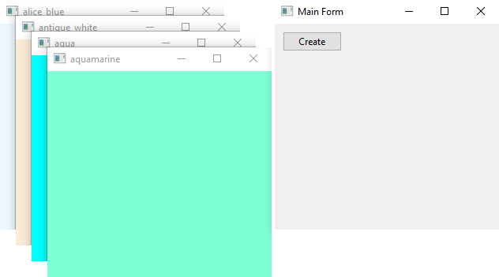
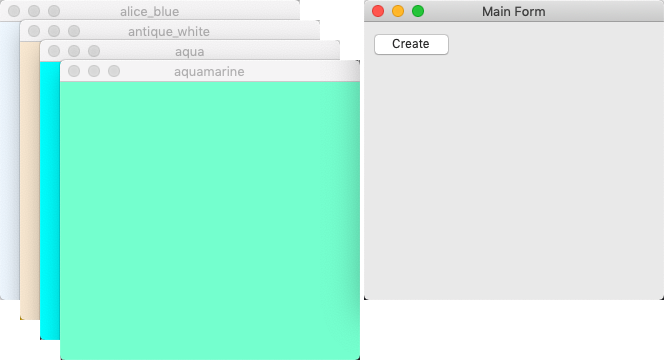
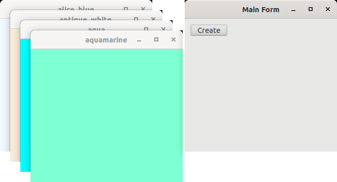
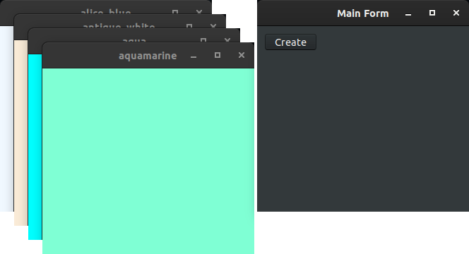

|
xtd
0.2.0
|
colored_forms.cpp
demonstrates the use of xtd::forms::form control with unicode text.
- Windows
- 

- macOS
- 

- Gnome
- 

#include <xtd/forms/application>
#include <xtd/forms/form>
#include <xtd/forms/screen>
using namespace xtd;
using namespace xtd::drawing;
using namespace xtd::forms;
auto main()->int {
auto colored_forms = std::vector<std::unique_ptr<form>> {};
auto form_main = form::create("Main Form", point {screen::primary_screen().working_area().width() - 340, 40});
auto create_button = button::create(form_main, "Create", {10, 10});
create_button.click += [&] {
auto colored_form = std::make_unique<form>();
colored_form->text(enum_object<>::to_string(form_color)).back_color(color::from_known_color(form_color)).visible(true);
colored_forms.push_back(std::move(colored_form));
form_color = form_color != known_color::yellow_green ? as<known_color>(as<int>(form_color) + 1) : known_color::alice_blue;
};
application::run(form_main);
}
static xtd::drawing::color from_known_color(xtd::drawing::known_color color)
Creates a xtd::drawing::color class from the four ARGB component (alpha, red, green,...
xtd::ustring to_string() const noexcept override
Returns a sxd::ustring that represents the current object.
Definition: enum_object.h:132
@ point
Specifies a printer's point (1/72 inch) as the unit of measure.
The xtd::drawing namespace provides access to GDI+ basic graphics functionality. More advanced functi...
Definition: actions_system_images.h:11
The xtd::forms namespace contains classes for creating Windows-based applications that take full adva...
Definition: about_box.h:13
The xtd namespace contains all fundamental classes to access Hardware, Os, System,...
Definition: system_report.h:17
Generated on Sun Oct 1 2023 07:46:01 for xtd by Gammasoft. All rights reserved.